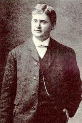

|
|
颂主新歌 |
|
1 O how great His salvation! Refrain: 2 All my sins are forgiven! 3 Neither sin nor temptation, 4 Hallelu, Sweet is His name, 5 I will sing Hallelujah!
|
|
|
|
|
|
|
|


405主断开一切锁链 - 主斷開一切鎖鏈(精典聖歌100首5救贖恩典)
https://youtu.be/SQq9VqF_yDQ - 主断开一切锁链 Jesus Breaks
Every Fetter { HHIZ } https://youtu.be/KKO0_3UJ8v8
| Text: | 主斷開一切鎖鍊 (Jesus breaks every fetter) |
| Tune: | [O how great His salvation] |
| Composer: | William McDonald |
| Short Name: | W. McDonald |
| Full Name: | McDonald, W. (William), 1820-1901 |
| Birth Year: | 1820 |
| Death Year: | 1901 |
McDonald, Rev. William. (Belmont, Maine, March 1, 1820--September 11, 1901, Monrovia, California). Becoming a local preacher in the Methodist Episcopal Church in 1839 he was admitted to the Maine Conference in 1843, being transferred to that of Wisconsin in 1855 and of New England in 1859. For a number of years he was editor of the Advocate of Christian Holiness. In addition to being a writer of biographies and religious books, he compiled, or assisted in compiling, a number of song books of the gospel song type, among them being the Western Minstrel (1840), Wesleyan Minstrel (1853), Beulah Songs (1870), Tribute of Praise (1874). This last book was that which had been compiled by McDonald and L.F. Snow, and re-edited by Eben Tourjée, appeared in 1882 as the official hymnal of the Methodist Protestant Church. From 1870 he spent many years in evangelistic work before his retirement to Monrovia.
Sources: Metcalf, Frank J., American Writers and Compilers of Sacred Music; Tillett, Wilbur F., Our Hymns and Their Authors; Nutter and Tillett, Hymns and Hymn Writers of the Church; McCutchan, Robert G., Our Hymnody; Benson, L.F., The English Hymn.
I am all on the altar
Author: Charlie D. TillmanTune: [I am all on the altar]
| Short Name: | Charlie D. Tillman |
| Full Name: | Tillman, Charlie D. (Charles Davis), 1861-1943 |
| Birth Year: | 1861 |
| Death Year: | 1943 |
Tillman, Charles "Charlie" Davis.

(Tallahassee, Talapoosa County, Alabama, March 20, 1861--1943). Married Anna Killingsworth (Dec. 24, 1889); four daughters, one son (d.1910).
I really enjoy this hymn when I read Romans 8:1-2, "There is now no
condemnation to those who are in Christ Jesus. For the law of the Spirit of life
has freed me in Christ Jesus from the law of sin and of death."
I enoyed the notes too, "The law of the Spirit of life is the subject of Romans
chapter 8...
Life is the content and issue of the Spirit, and the Spirit is the ultimate and
consummate manifestation of the Triune God after His being
processed through incarnation, crucifixion, resurrection, ascension, and
becoming the indwelling and life-giving Spirit, who is life to all the believers
in Christ (p. 633).